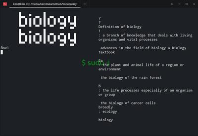

Karobben
29 Feb 2020
After a few days of self-inspect, I made a hard decision, to cut off my main internet social networks for about a week.
I am almost 25 years old and preparing for TOEFL and GRE, and I am very active in a QQ, Wechat, and Bilibili,
the places I can find my "friends" and sense of belonging, sense of existing. What I find is that I did not fully focus on exam preparation,
but waste lots of time on those social networks. For example, the first thing I did every day is grasping my cellphone first,
opening eyes, and then, checking if there are any new massages: I am deeply addicted to it and as a result, I believe I need change right now.
Though the internet is the heavens for me, the one who is not good at making new friends from strangers face to face,
I have less than 5 people on the frequent contact list. I find that I can acquire huge self-achievement from the massages who send to me because it makes me think:
there is a guy who contacted with my first! Is that mean I am popular? Or what did they say? What did they want to know from me?
Those unknown questions make me feel excited and look forward to the new massages. As a consequence,
I will fall into the vacuum after that ephemeral happiness, or feel hugely depression if there is nothing updates after checked for all social apps.
It exposed lots of my frailties, for instance, desiring to be notified, be commanded and lack self-control,
self-motivated, etc. Of course, I am not mean that I am totally useless and the people like me are worthless because I believe that we are human:
it is normal that we have such weaknesses and all of the weaknesses could be counted as merits under some specific circumstances.
But under the current condition, I'd better have good self-control and fine attitude on virtual social networks rather than losing
control and letting the desiring rampant and take over of my mind--I can not submit to my wild calls further or my life will be harder at now and in the future.
At present, I'm feeling good. Without QQ, Wechat there is nothing I can check and reply. Without the expectations form those Apps,
I 'm not looking forward to getting new messages anymore. I'm just keeping contact with my friends with text message who lives near
the center of the epidemic since he is under isolating due to one of his family involved in the event.
Some times, I want to share some jokes in QQ groups, but soon, I realize I am under the "Isolating Experiment". So,
I just write a script to help me to update all the pages in a folder and post this article to record my little experiment.
But I am still frequently trying to send or check the massages from Apps and recoding the times when this idea popping out in my mind.
As a result, I tried more than 86 times to use social Apps! It looks sound for a cellphone abuser and I think it is acceptable for the Day one.
What I find is that I am really addicted to Social network Apps: when I get bored, I want to send/check my messages; when I am happy, I want to share with Apps;
when I feel tiring, I want to check the messages to kill the time; when I am annoyed, I want to find consolating from the cell phone; when I am helpless,
I want to ask for help from the QQ groups; when I am frustrated by questions, I want to eschew and fresh the cell phone. In other words,
whatever happened to me will turn me to the cell phone.
But anyway, I do done more jobs than the previous day though I am frequently distracted by missing the Social Apps.
I finally realized that how am I addicted to them and postponed routine tasks. I can definitely do better with the limited use of those Apps.
There is a voice in my mind frequently suggesting me to reinstall them especially at night,
but I am fighting with this voice and this fight will be lasting for a week to finish my experiment.
And I'll record my daily experience and changes that happened to me and share it with you who are addicted to virtual social networks and trying to make a change
but don't know how to start it. So, let's expecting what will happen in the next few days.
I thought I can do better than the Day 1, but the truth is I did worse. judging from the performance of the first day,
I thought this task is not as hard as I previously thought, and I can easily handle this since I am not addicted to Cell Phones so badly.
But soon, I realized that, no, I am, I am addicted to Cell phone very heavily as to that I am missing it in every moment when I am doing anything now.
I tried to control this desiring and it only went out of charge. At first, I am watching TV with my parents, the show is good so it could take all my attention,
and I thought I might not miss my cell phone anymore. But soon, I find I am wrong about because once I back to study,
the images of social apps can't stop popping in my mind. It switches with each time while I am typing and it is too frequent to be recoded.
So, I tried to focus or distract my attention from thinking about the cell phone by writing blogs and script and it works.
After a few houses struggling with this addiction, I finally got a short peaceful and could focus on study again though I am stilling want to refresh my cell phone time to times.
I am feeling pretty well on the Day 3 and not really missing my Social Apps now. And I have done more jobs than the previous day. I am also starting to write the vocabulary-checking script with the 'urwid' lib for helping me to practice typing and remembering English vocabulary. It is executable now, which could check my spelling, record the times of rightness and mistake, and show the definition of the word on the right side. Though, I will add more features, statistic information and graphics for instants, by time to time, my most desiring feature is marking my mistakes with a striking color or background, just like I am done by "print" in Python, but not works in "urwid". I also registered for the exams, one is at the end of May, another is at the end of Jun. That means I have enough time to prepare for them. This is the last chance for me because I don't want to waste more time to stay at home but back to campus as soon as possible. Good luck to me and Good luck with everything.

This is Day 4. I am pretty goo.. No, I am not good at all. Actually, I thought I am already out of the addiction any more by judging the performance of Day 3.
And I do feeling good during the day time. But the depression and frustration were surging to my mind again at the night which make me feeling helpless and
exhausted again and wanna do nothing but open QQ or Wechat to send nothing meaningful massages.
The depression made me remembered the day of the last few weeks at the last time I was life in American alone. Though the hoster family is nice but I still
falt into huge depression because of lacking face to face communication with peers nevertheless, I could send texts while the cell phone with my friends in China.
I didn't remember how I made it, but I do remember that I was feeling deeply disgusting to any foods as I have to force myself to feed,
resisting to fell into sleep every night even though I am really tired. I was tried to stay at a noising place as long as possible because the quiet environment was killing me.
So, I spend most of the time at 24 areas of the library where people can talk and even eat, at Starbucks to listen talking and the crying from the coffee machine,
at the dining hall to watch people playing games and walk in and out. As for the night, I'll open YouTube for a whole night just for making some sound.
Those feelings and experiences made me reinspect again because, at present, it seems that having social apps could help me to at least dispersing a part of depression and
bring me with some consolation. So, probably the problem is not coming from the social apps, which we believe that it was designed for making us addicted to it,
for sucking our face in it, and for squashing our trifling time, but coming from myself, which means I am unhealthy and unstable with or without the cell phone,
and the cell phone is just a medicine for rescuing me from the situation for temporary. I don't know which is right. But anyway,
I just want to finish this experiment as soon as possible and back to normal life.
Normal life? What about normal? What is normal? I was usually saying that it is normal, everything is normal. Because, for example,
It might seem abnormal to walking backward on the street, but it is normal for the man who wants to enjoy the backward scenery, a flower or the sunset, maybe.
So, I do believe that normal is a relative word and as so, we needn't waste our time and energy to concerning the judgment from pedestrians.
But I'll still feel reliving from worrying about my behavior when I find someone just behaves like me. What a contradiction between my ideology and behavior!
I decide to do nothing about the test today because I'm not feeling myself. On the other hand, I'd like to know some latest information about the epidemic.
So, I spend a whole afternoon to download the data from Github, writing scripts to visualize the data, inspect the feature of the current model.
The good news is according to the data, these plagues are at the end of its life circle, "springtime" is coming. After that,
I decided to play Dota2 for a whole night to kill the time. It made me believe that deleting those Social Apps is inappropriate.
It does not help me to save my time from refreshing and checking the cell phone, but losing even more time by falling into depression and lost my motivation to study.
But this experiment is still running, and as yet, I'll not reinstall the Apps.
On the other hand, I ordered a take out, a cup of coffee, for the first time in 2020. But soon,
I felt regret because the community was locking and I have to go to the door of the community to take it.